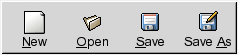

by Johannes Roith (johannes@jroith.de) [if you contribute to this chapter please add your name here]
This chapter does use some content from the GTK+ Tutorial by Tony Gale, Ian Main, & the GTK team
Introduction
GTK (GIMP Toolkit) is a library for creating graphical user interfaces. It is licensed using the LGPL license, so you can develop open software, free software, or even commercial non-free software using GTK without having to spend anything for licenses or royalties.
It's called the GIMP toolkit because it was originally written for developing the GNU Image Manipulation Program (GIMP), but GTK has now been used in a large number of software projects, including the GNU Network Object Model Environment (GNOME) project. GTK is built on top of GDK (GIMP Drawing Kit) which is basically a wrapper around the low-level functions for accessing the underlying windowing functions (Xlib in the case of the X windows system), and gdk-pixbuf, a library for client-side image manipulation.
HelloWorld, first try
HelloWorld in Gtk#:
using Gtk;
using GtkSharp;
using System;
class Hello {
static void Main()
{
Application.Init ();
Window window = new Window ("helloworld");
window.Show();
Application.Run ();
}
}
It's a bit longer than console hello world and needs some explanation.
Before we jump in the Main method, every GTK# Application will have to import the namespaces:
using Gtk;
using GtkSharp;
If you don't do so, each Class from one of these namespaces needs the namespace mentioned as prefix.
In Main() at first you see:
Application.Init()
This initializes GTK and is needed in every GTK# Application.
The next line create a new window. GTK# can set the title in the constructor and saves one line compared to C.
Window window = new Window ("helloworld");
Application.Run()
shows the application and most importantly keeps it open, waiting for events, until Quit() is called.
HelloWorld, second try
While the above program compiles and runs, it's doesn't quit, properly. You've to exit with CRTL+C.
using Gtk;
using GtkSharp;
using System;
class Hello {
static void Main()
{
Application.Init ();
Window window = new Window ("helloworld");
window.DeleteEvent += new DeleteEventHandler (delete_event);
window.ShowAll ();
Button btn = new Button ("Hello World");
btn.Clicked += new EventHandler (hello);
Application.Run ();
}
static void delete_event (object obj, DeleteEventArgs args)
{
Application.Quit ();
}
static void hello (object obj, EventArgs args)
{
Console.WriteLine("Hello World");
Application.Quit ();
}
}
This sample quits correctly.
GTK is an event driven toolkit, which means it will sleep in Application.Run() until an event occurs and control is passed to the appropriate function. GTK# can make use of the type "event". When you close HelloWorld, the DeleteEvent is thrown, by the window.
To enable your application to react on the DeleteEvent, you must connect it to an event handler.
window.DeleteEvent += new DeleteEventHandler (delete_event);
An event handler is passed an object, the object that fired the event, here window, and EventArgs. The EventArgs here have the special type DeleteEventArgs).
This sample also adds a button to the window and connects the clicked event to "hello".
Packing Widgets (Boxes)
When creating an application, you'll want to put more than one widget inside a window. Our first helloworld example only used one widget so we could simply use a window.Add() call to "pack" the widget into the window. But when you want to put more than one widget into a window, how do you control where that widget is positioned? This is where packing comes in.
If you come from Windows, you're probably used to position several widgets using coordinates. Also possible, that's not the way it's done in GTK#. Most packing is done by creating boxes. These are invisible widget containers that we can pack our widgets into which come in two forms, a horizontal box, and a vertical box. While this is more difficult for a newcomer it has some advantages:
Independent of screesize
Easier Internationalization
When packing widgets into a horizontal box, the objects are inserted horizontally from left to right or right to left depending on the call used. In a vertical box, widgets are packed from top to bottom or vice versa. You may use any combination of boxes inside or beside other boxes to create the desired effect.
An object may be another container or a widget. In fact, many widgets are actually containers themselves, including the button, but we usually only use a label inside a button.
By using these calls, GTK knows where you want to place your widgets so it can do automatic resizing and other nifty things. There are also a number of options as to how your widgets should be packed. As you can imagine, this method gives us a quite a bit of flexibility when placing and creating widgets.
[TODO]
A closer look at Buttons
GTK# offers not just the normal button, but some other types, derived from it.
Using Stock Icons
Up to now, we only created Buttons containing a label. It's possible to create a
Button from Stock Icon, which is very good for consistency in Gnome apps:
Common look & feel: Toolbar with 4 Stock Icons.

Button stockbutton = Button.FromStock(stocktype);
Gtk# offers a wide range of good-looking, well designed and accessible icons.
Anopther benfit of Stock Icons is, that they are available in many languages,
and there is no need, to translate them.
stocktype must be one of these values:
You can put pretty much everything in the button. A often used example is a button with icon and label.
[TODO]
Toggle Buttons
ToggleButtons are similiar to the normal button, but when clicked, may be depressed, and when you click again,
they will pop back up. Click again, and they will pop back down. When popped down, the Property Active has the value "true".
using Gtk;
using GtkSharp;
using System;
using System.Drawing;
public class checkbuttons
{
public static void Main(string[] args)
{
Application.Init();
Window window = new Window("toggle buttons");
window.DeleteEvent += new DeleteEventHandler (delete_event);
/* Creating a new ToggleButton*/
ToggleButton togglebutton = new ToggleButton ("button1");
togglebutton.Clicked += new EventHandler (clickedCallback);
window.Add(togglebutton);
window.ShowAll();
Application.Run();
}
static void delete_event (object obj, DeleteEventArgs args)
{
Application.Quit();
}
static void clickedCallback (object obj, EventArgs args)
{
/* Check Active Property */
if (((ToggleButton) obj).Active)
Console.WriteLine ("ToggleButton clicked, I'm activating");
}
}
Check Buttons
Check Buttons are squares with text besides them. From a programmers point of view, they work like ToggleButtons.
CheckButton cb1 = new CheckButton ("CheckButton 1");
Radio Buttons
[TODO]: Sample needs explanation.
using Gtk;
using GtkSharp;
using System;
using System.Drawing;
public class radiobuttons
{
static GLib.SList group = null;
static void delete_event (object obj, DeleteEventArgs args)
{
Application.Quit();
}
static void exitbutton_event (object obj, EventArgs args)
{
Application.Quit();
}
public static void Main(string[] args)
{
Application.Init();
Window window = new Window("radio buttons");
window.DeleteEvent += new DeleteEventHandler (delete_event);
window.BorderWidth = 0;
VBox box1 = new VBox (false, 0);
window.Add(box1);
box1.Show();
VBox box2 = new VBox (false, 10);
box2.BorderWidth = 10;
box1.PackStart(box2, true, true, 0);
box2.Show();
RadioButton radiobutton = new RadioButton (null, "button1");
box2.PackStart(radiobutton, true, true, 0);
radiobutton.Show();
group = radiobutton.Group;
RadioButton radiobutton2 = new RadioButton(group, "button2");
radiobutton2.Active = true;
box2.PackStart(radiobutton2, true, true, 0);
radiobutton2.Show();
RadioButton radiobutton3 = RadioButton.NewWithLabelFromWidget(radiobutton, "button3");
box2.PackStart(radiobutton3, true, true, 0);
radiobutton3.Show();
HSeparator separator = new HSeparator ();
box1.PackStart (separator,false, true, 0);
separator.Show();
VBox box3 = new VBox(false, 10);
box3.BorderWidth = 10;
box1.PackStart(box3,false, true, 0);
box3.Show();
Button button = new Button ("close");
button.Clicked += new EventHandler (exitbutton_event);
box3.PackStart(button, true, true, 0);
button.CanDefault = true;
button.GrabDefault();
button.Show();
window.ShowAll();
Application.Run();
}
}
Container Widgets
[TODO]
Miscellaneous Widgets
This section describes some often used widgets, but is not a complete reference. A more complete
listing will be available in the GTK# port of the GTK+ 2.0 tutorial or the GTK# documentation.
Labels
Creating a new Label...
Label label1 = new Label("Caption");
A new feature makes it possible, to use simple styles in label captions. It's called GMarkup and is similiar to HTML:
Label label1 = new Label("A <span color=\"blue\">blue</span> <big>and</big> <b>bold</b> label");
This line is rendered like that:
The feature is possible, thanks to pango, that is discussed later.
The label text can be justified using:
label1.Justify = jtype;
jtype must be a value of the Justification enumeration: